Insta·la Windows Server 12 - GUI i Core
1 Instal·la un servidor Windows Server 2012 amb GUI i:
1.1 Modifica el nom del servidor 1.2 Posa una ip fixa 1.3 Actualitza el sistema 1.4 Desactiva les actualitzacions 1.5 Treu les icones típiques de l'escriptori 1.6 Instal·la les guestadditions 1.7 Desactiva el firewall 1.8 Comprova que la zona horària sigui la correcta 1.9 Reinicia la màquina i FES-TE UNA CÒPIA DE SEGURETAT
2. Instal·la un servidor Windows Server 2012 sense GUI amb mode Core i:
2.1. Modifica el nom del servidor
Ara editarem diferents apartats del servidor Windows 2012 amb la comanda
sconfig. 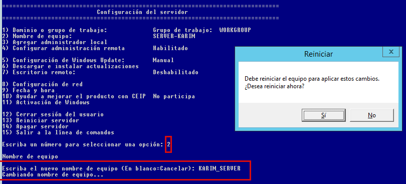 1. Cal seleccionar el numero 2 per accedir a les opcions de cambiar el nom dels Servidor.
2. Despres ja podem escriure el nou nomKARIM-SERVERdel servidor i reiniciem l'equip per a que s'apliquen els canvis.
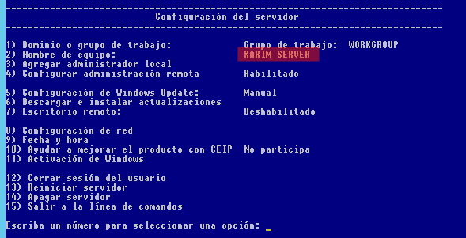2.2. Posa una ip fixa
Ara afegirem una nova IP estatica utilitzant la comanda
sconfig.
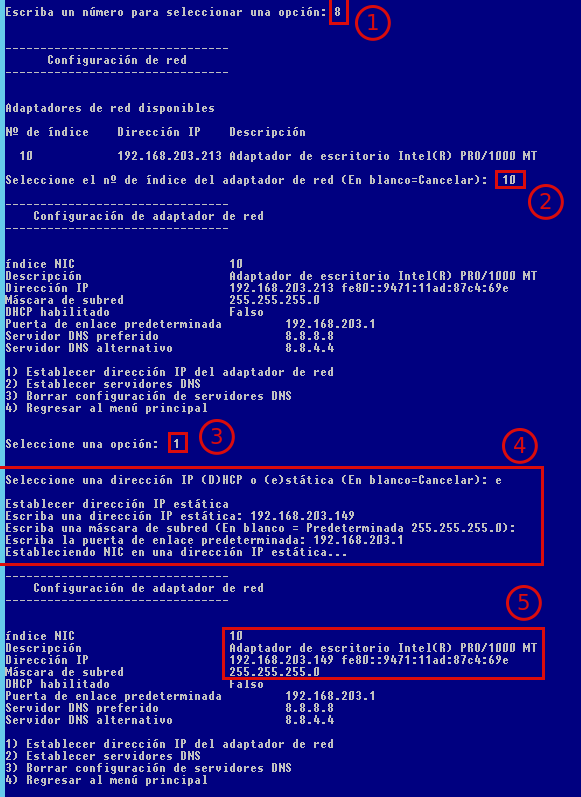
1. En primer lloc seleccionem el numero 8 per entrar a les opcions dered.
2. Despres seleccionem el numero 10 el qual serveix per indica el numero de de index de l'adaptador.
3. Ara cal indicar el numero 1 per indicar que volem establir una nova IP.
4. En aquest punt seleccionemeper indicar que volem afegir una IP estatica.
5. En l'ultim punt ja podrem observar com s'ha canviat la IP nova.2.3. Desactiva les actualitzacions
Ara desactivarem el
firewallutilitzant la comandasconfig.
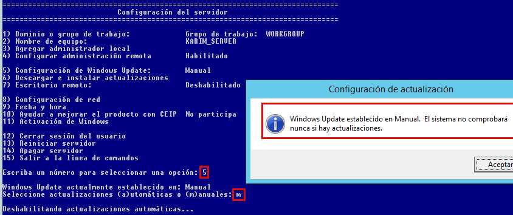 1. Començem seleccionant el numero 5 per accedir a les opcions de actualitzacions.
2. Despres seleccionemmper indicar que les actualizacions siguen manuals i no automatiques.2.4. Comprova que la zona horària sigui la correcta
Ara comprovarem que la zona horària sigui la correcta utilitzant la comanda
sconfig.
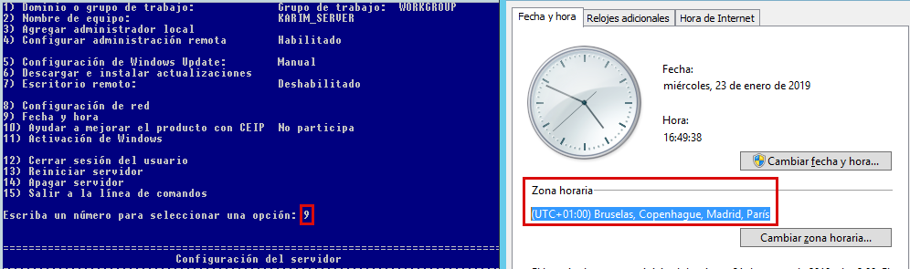 1. Per poder comprovar la zona horaria cal seleccionar el numero 9.
2. Un cop seleccionat el numero corresponent ens surtira el rellotge hi ho podrem comprovar.2.5. Reinicia la màquina i FES-TE UNA CÒPIA DE SEGURETAT
Ara reiniciarem el servidor utilitzant la comanda
sconfig.
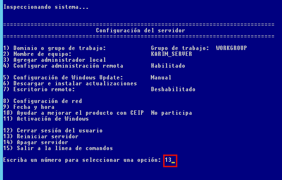
1. Seleccionarem el numero 13 que serveix per reiniciar el servidor. 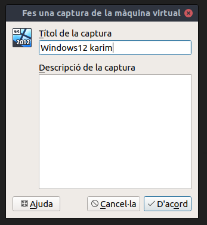
2. Un cop reiniciat fem unacòpia de seguretatfent una instantanea ambVirtualBox.
3. Treure una interficie gràfica del servidor GUI
3.1. Treure la interfície Shell de la màquina amb GUI, o sigui, deixar només una interfície molt bàsica (has de fer-ho mitjançant l’opció de “Quitar roles y características”)
En primer lloc seleccionem l'opció de
Quitar roles y funcionesque estroba a la part superior dins deAdministrar.
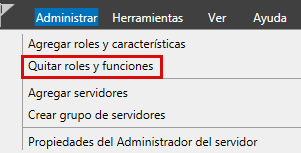
1. Despres anem a l'apartatCaracteristicas.
2. Un cop dins deseleccionem l'opcioWindows PowerShell.
3. Ara ja podem seleccionarQuitar caracteristicaper treure-la. 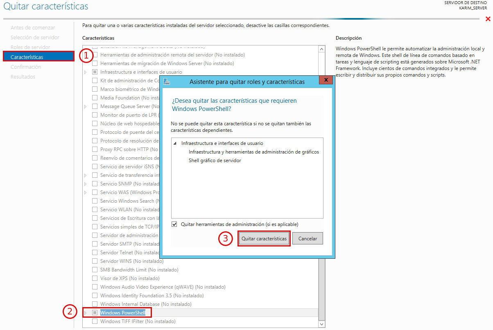
Ara seleccionem l'opcio de reinici automatic i seguim amb el process. 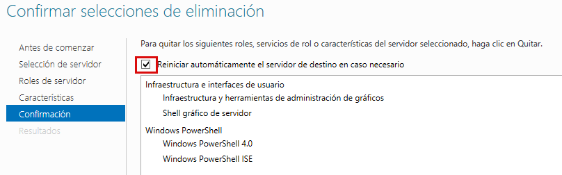
Ara hem desperar a que es carregue el process. 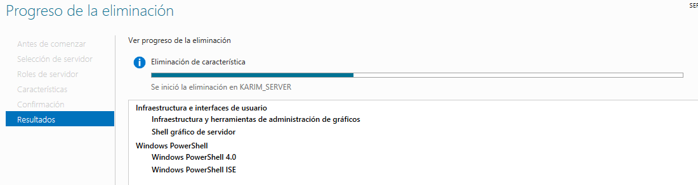
Un cop reiniciat ja podrem gaudir del nostre servidor sense part Grafica. 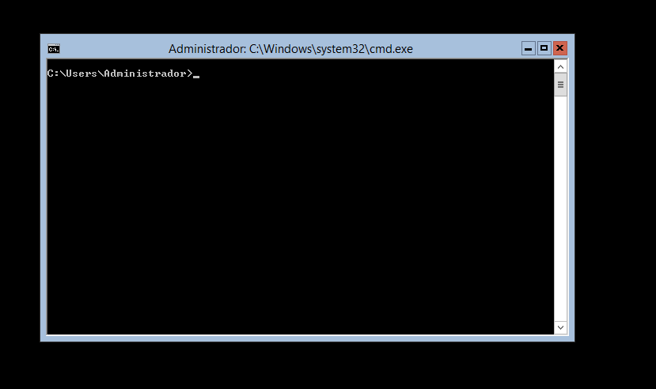
4. Instal·la una interficie gràfica al servidor Core
3.2. Afegir una interfície molt bàsica a la màquina amb Core (a continuació tens les passes a seguir)
3.2.1. Afegim la .iso del server
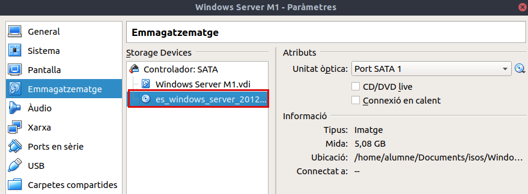
3.2.2. Executem powershell
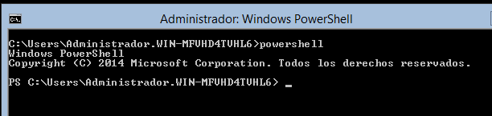
3.2.3. mkdir C:\wim
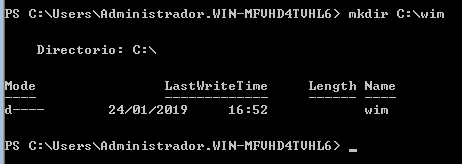
3.2.4. Assignem la nostra versió amb dism /get-wiminfo /wimfile:d:\sources\install.wim
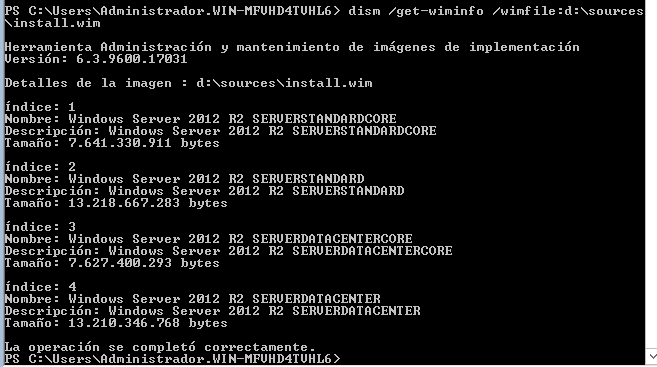
3.2.5. Muntem al directori creat ambdism /mount-wim /wimfile:d:\sources\install.wim /index:2 /mountdir:c:\wim /readonly
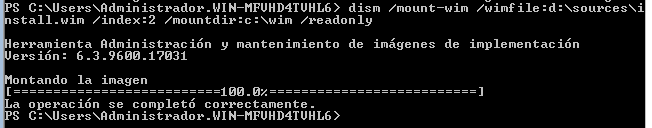
3.2.6. Instal·lem amb Install-WindowsFeature Server-Gui-Mgmt-Infra –Source C:\wim \Windows\WinSxS
3.2.7. Reiniciem amb shutdown –r –t 0
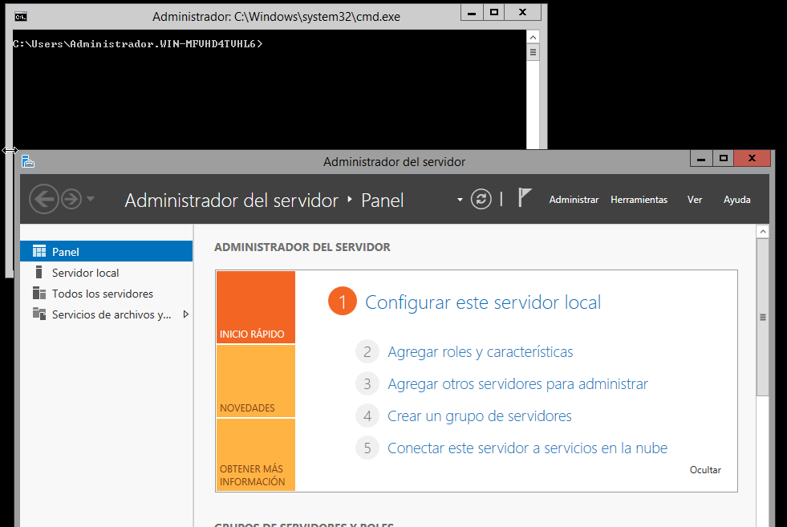
Reiniciem i comprobem que ja esta instal·lat.

5. Copies de seguretat dels servidors Windows 2012
Administració de Dominis W12 - GUI
1. Creació de un bosc en un domini
1.1 Crea un nou bosc amb un nou domini. El domini s'ha de dir elteunom.cat, elteunom.com
2. Crear una UO amb grups i isuaris
2.1 Crea una UO anomenada recursos_humans i dintre dos grups anomenats alumnes i professors
3. Modificació de les directives
3.1 Modifica les directives que fan referència a la política de paraules de pas
4. Creació de Grups i Usuaris
4. Crea dos usuaris dintre de cada grup, prova la política de paraules de pas establerta en el pas anterior i decideix quin poden modificar la paraula de pas, si aquesta caduca...
5. Unir un equip a un Domini
5.1 Valida un equip client al domini
En primer lloc cal treure el Firewall del Servidor i de l'eqip client. 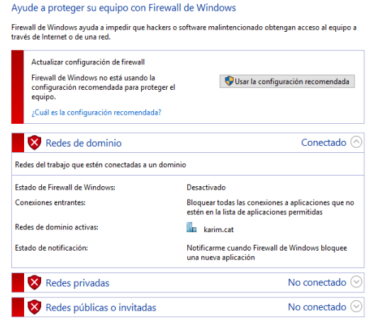
Un cop desactivat els Firellaws anem al client, i dins de les propietats de l'equip seleccionemCambiar configuración. 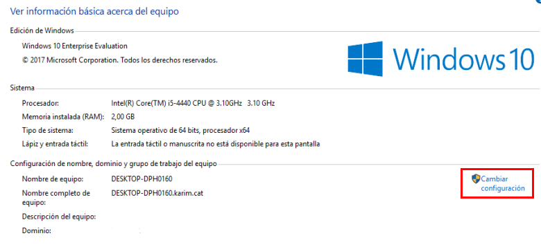
Un cop dins de les propietats del sistema anem a l'opcióCambiar.... 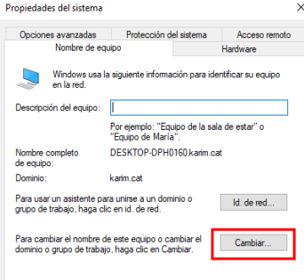
Ara li indiquem el nom del domini que en aquest cas eskarim.cati acceptem. 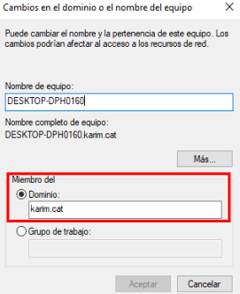
Ara anem al Servidor i comprovem que l'equip s'ha unit al domini. 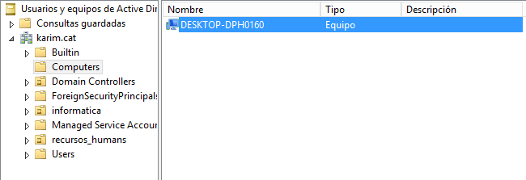
6. Establir un horari de connectivitat
6.1 Fes que un usuari només es pugui connectar uns dies determinats. Què passa si l’usuari està connectat i finalitza el seu temps de connexió?
7. Convertir un usuari local en Administrador
7.1 Fes que un usuari normal del domini pugui ser administrador d’un equip local. Hi ha diverses formes de fer-ho. Bàsicament és fer el mateix, però des de l’equip local o des del servidor. La diferència seria si ho ha de fer l’administrador del servidor o un usuari operador. Entre elles:
-
Cal entrar a l’equip localment, amb un usuari que tingui permisos i dir-li que l’usuari X que pertany al domini formi part del grup d’administradors locals de l’equip.
-
Des del Windows Server, clic dret a sobre l’equip i Administrar.
Boto dret sobre l'equip i selecconem
Administrar. 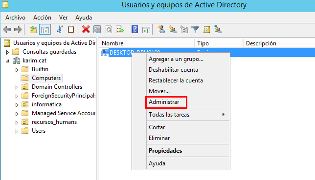
Ara afegirem al grupAdministradoresl'usuarikarim. 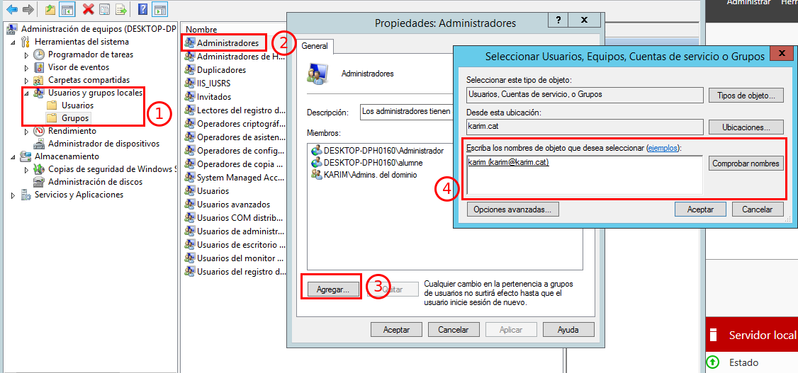
1. El primer pas es accedir a la categoriaUsuarios y grupos locales.
2. Ara seleccionem el grupAdministradoresboto dret i anem a Propietats.
3. Un cop dins de propipetats anem aAgregar.
4. Ara ja podem seleccionar el nostre usuari que en aquest cas eskarimi guardem els canvis.
Comprovem que l'usuari
karimes troba dins del grup d'administradors. 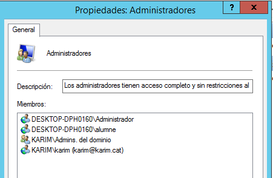
Per comprovar que l'usuarikarimté els permissos de l'administrador anem a canviar l'hora de l'equip ja que només és pots fer amb permissos d'administrador. 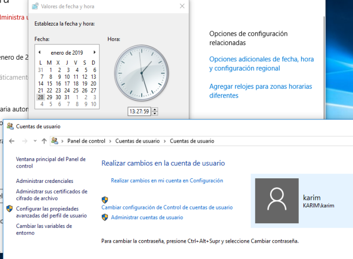
8. Carpetes compartides amb diferents metodes
8.1 Carpetes dels usuaris que es connecten al domini. Quan un usuari es connecta al domini ha de tenir la seva carpeta amb els seus arxius (tot emmagatzemat al servidor, no localment) disponible d’una forma fàcil o inclús transparent per a ell. Hi ha diverses formes de fer-ho, cadascuna amb les seves avantatges i inconvenients, tres formes podrien ser:
-
Una primera manera de fer-ho seria:
1.1 Creem la carpeta de l’usuari al servidor i la compartim només per a l’usuari amb els permisos corresponents.- Deixem Documentos igual i cerquem la carpeta per la xarxa i la connectem com a unitat de xarxa
Ara dins el servidor creem una carpeta compartida dins de la unitat de
DADES. 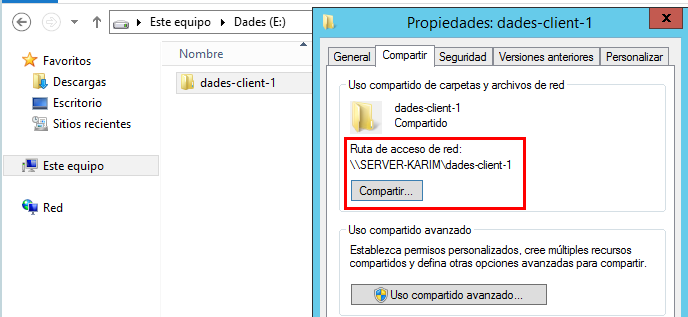
Ara anem a les propietats de l'usuario karim dins deperfila carpetes compartides afegim la lletra de la unitat de disc i la ruta de la carpeta.
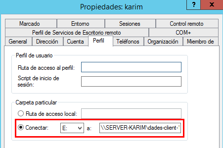
Ara ja podem comprovar que ja s'ha compartit la carpeta compartida. 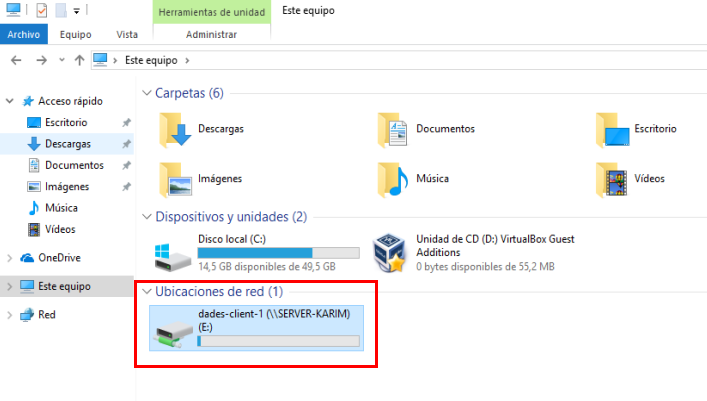 - A l’ordinador (amb un usuari administrador) modifiquem la ruta de Documentos
Anem a les propietats de la carpeta
documentosi canviem la ruta per la careta compartida del servidor.
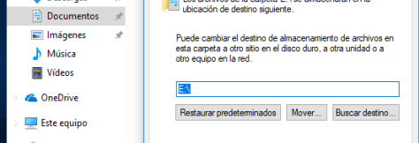
- Deixem Documentos igual i cerquem la carpeta per la xarxa i la connectem com a unitat de xarxa
-
Una segona manera podria ser:
2.1 Creem la carpeta de l’usuari al servidor i la compartim només per a l’usuari amb els permisos corresponents i a la fitxa de l’usuari, omplim el camp connectar de la seva carpeta, assignem una lletra i la ruta del recurs compartit. Per exemple:R: \\WIN2012\personals\%username%Creem la carpeta compartida de nom
Perosnali li donem permissos a l'usuarikarim. 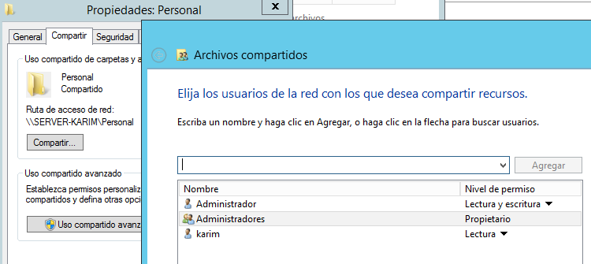
Ara dins de propietats de l'usuari aperfilafegim la ruta de la carpeta compartida amb l'unitat de disc.
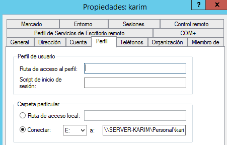
Ara ja podem comprovar que la carpeta ja s'ha compartit correctament. 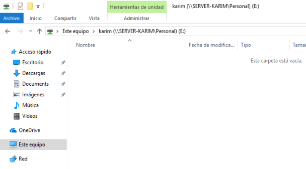 -
Una tercera manera podria ser mitjançan un script d'inici de sessió:
- L'script cal que s'anomeni logon.bat
- Cal que estigui a una carpeta determinada
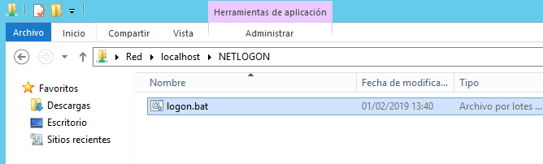 - Cal que indiques simplement el nom de l'script a la fitxa de perfil de l'usuari, a l'apartat Script de inicio de sesión
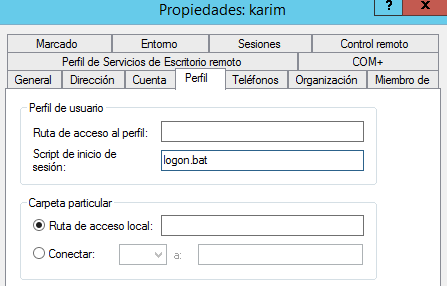 - I dintre de l'script només has de posar una línia que munta la unitat de xarxa del tipus
net useZ: \\WIN2012\personals\%username%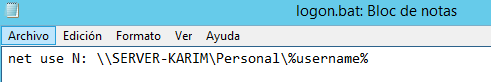 - Ara ja podem comprovar que l'escript funciona al poder accedir
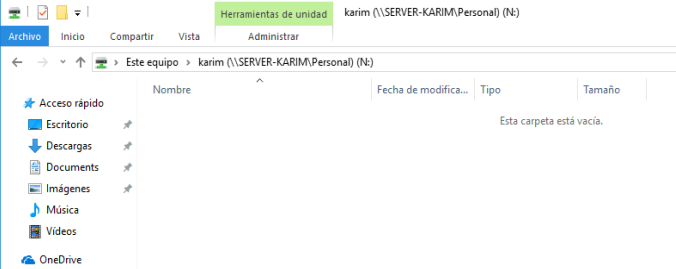
9. Creació dun perfil mòbil
9.1 Crea un perfil mòbil i aplica'l a la resta d'usuaris
1. Crea a la C: una carpeta anomenada perfils_alumnes 2. Comparteix aquesta carpeta només per al grup alumnes amb permisos de Control Total i per a l'Administrador també amb permisos de Control Total 3. Ves a un usuari alumne i al perfil introdueix la ruta del tipus `\\WIN2012\ perfils_alumnes \%username%` 4. Inicia sessió amb un usuari alumne en un equip client i comprova al servidor com es crea una carpeta dintre de perfils_alumnes amb el nom de l'usuari.v2 5. Per a què serveix un perfil mòbil?
10 Perfils oabligatoris
10. Com faries si vols que aquest perfil sigui obligatori? Fes-ho i comprova que realment és obligatori
1. Per a convertir un perfil mòbil en obligatori només cal que entris dintre de la carpeta v2 de l'usuari que escolleixis, mostres els arxius ocults i que modifiques l'arxiu ntuser.dat a ntuser.man 2. Llavors quan un usuari iniciï sessió, faci canvis a l'escriptori... i tanqui sessió i torni a entrar, els canvis no s'hauran emmagatzemat